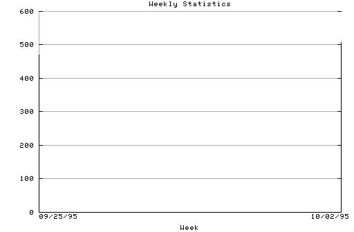

HTTP Server Weekly Statistics
Covers: 09/25/95 to 10/08/95 (14 days).
All dates are in local time.
Week of 09/25/95: 470 : ######### Week of 10/02/95: 507 : ##########

Statistics generated at Fri Oct 13 16:44:20 MET 1995, (C) Oslonett AS, 1995.